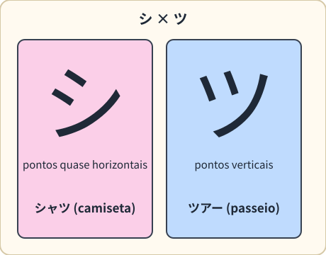
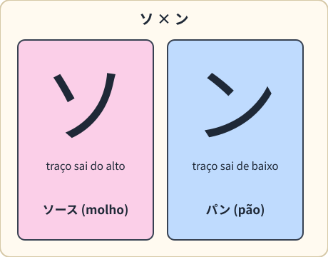
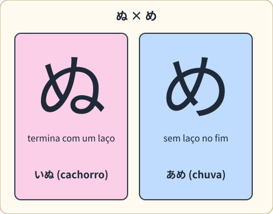
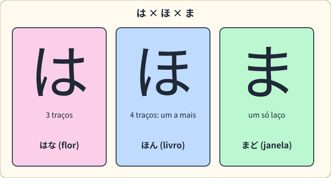
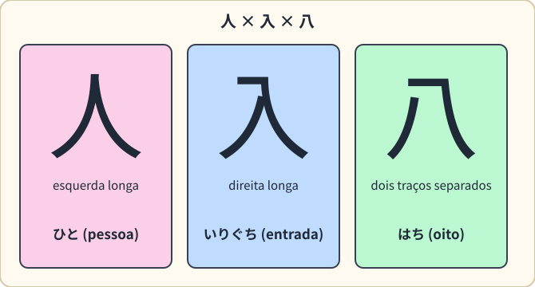
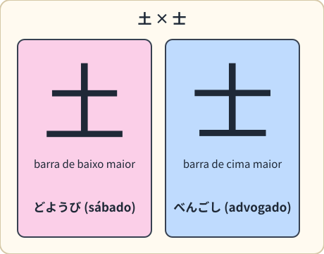
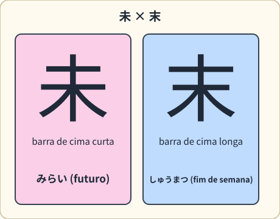
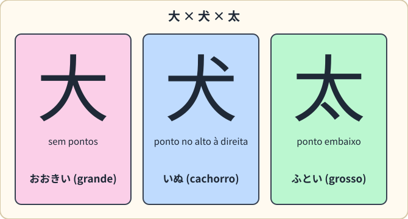
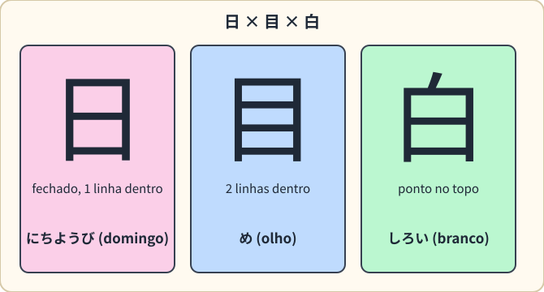

Quase todo iniciante confunde estes pares. A regra é: olhe a direção, o comprimento e o número de traços, e sempre associe o caractere a uma palavra do dia a dia.
Como usar esta página
- Leia o par e a diferença. 2. Cubra a coluna “No dia a dia” e tente lembrar uma palavra. 3. Volte nos pares que errou e marque
#revisar. Detalhes de cada linha: Hiragana (visão geral) · Katakana (visão geral). Ordem dos traços ajuda muito: Ordem dos traços.
flowchart TD Q["Dois caracteres parecidos"] --> A{"Onde está?"} A -- "palavra de origem estrangeira<br/>(コーヒー, ホテル)" --> K["Provavelmente katakana"] A -- "partícula ou final de verbo<br/>(は, を, ます)" --> H["Provavelmente hiragana"] A -- "junto com kana, com significado<br/>(大きい, 人)" --> J["Pode ser kanji"] K --> Z["Confira em Katakana - Sons estrangeiros"] H --> Y["Confira a linha no vault"] J --> X["Confira a tabela de kanji x katakana abaixo"]
1. Hiragana
| Par | Como diferenciar | No dia a dia |
|---|---|---|
| は (ha) × ほ (ho) × ま (ma) | ほ tem um traço a mais no alto da parte da direita; ま tem um só laço no fim | はな (hana, flor) · ほん (hon, livro) · まど (mado, janela) |
| ぬ (nu) × め (me) | ぬ termina com um laço enrolado | いぬ (inu, cachorro) · あめ (ame, chuva) |
| わ (wa) × れ (re) × ね (ne) | わ termina arredondado para dentro; れ e ね saem para fora; ね tem um laço | わたし (watashi, eu) · れいぞうこ (reizōko, geladeira) · ねこ (neko, gato) |
| さ (sa) × き (ki) | き tem dois traços horizontais; さ tem um | さかな (sakana, peixe) · きのう (kinō, ontem) |
| る (ru) × ろ (ro) | る termina com um laço | くるま (kuruma, carro) · ろく (roku, seis) |
| い (i) × り (ri) | い tem dois traços curtos e inclinados; em り o traço da direita é comprido e desce | いす (isu, cadeira) · りんご (ringo, maçã) |
| あ (a) × お (o) | あ tem um laço aberto à direita; お tem um pontinho no alto à direita | あさ (asa, manhã) · おかね (okane, dinheiro) |
| ち (chi) × ら (ra) | ち tem a barra horizontal ligada ao traço curvo; ら começa com um pontinho no alto | ちず (chizu, mapa) · さくら (sakura, cerejeira) |
| こ (ko) × に (ni) | こ são dois traços horizontais; に tem um traço vertical à esquerda | こども (kodomo, criança) · にく (niku, carne) |
| た (ta) × な (na) | な tem um laço no fim, た não | たまご (tamago, ovo) · なまえ (namae, nome) |
| す (su) × む (mu) | む tem um pontinho extra à direita | すし (sushi) · むし (mushi, inseto) |
2. Katakana
| Par | Como diferenciar | No dia a dia |
|---|---|---|
| シ (shi) × ツ (tsu) | シ: pontos quase horizontais; ツ: pontos verticais | シャツ (shatsu, camiseta) · ツアー (tsuā, passeio guiado) |
| ソ (so) × ン (n) | ソ: pontos mais verticais e o traço sai do alto; ン: pontos horizontais e o traço sai de baixo | ソース (sōsu, molho) · パン (pan, pão) |
| ウ (u) × ワ (wa) × フ (fu) | ウ tem um traço extra no alto; ワ não tem; フ é um só gancho | ウイスキー (uisukī, uísque) · ワイン (wain, vinho) · フォーク (fōku, garfo) |
| ク (ku) × タ (ta) | タ tem um traço a mais dentro | クッキー (kukkī, biscoito) · タクシー (takushī, táxi) |
| コ (ko) × ユ (yu) | ユ tem um traço extra, com a base saindo para a direita | コーヒー (kōhī, café) · ユーザー (yūzā, usuário) |
| ス (su) × ヌ (nu) | ヌ tem um tracinho extra no meio | スーパー (sūpā, supermercado) · ヌードル (nūdoru, macarrão) |
| ノ (no) × メ (me) | ノ é um único traço; メ são dois traços que se cruzam | ノート (nōto, caderno) · メニュー (menyū, cardápio) |
| チ (chi) × テ (te) | チ tem um traço inclinado no topo; テ tem duas linhas horizontais | チーズ (chīzu, queijo) · テレビ (terebi, TV) |
| マ (ma) × ム (mu) | マ tem uma barra horizontal no alto; ム lembra um triângulo com cauda | マスク (masuku, máscara) · ゲーム (gēmu, jogo) |
3. Hiragana × katakana (quase iguais)
Estes pares têm o mesmo som e desenho parecido. Em geral, o katakana é mais anguloso.
| Hiragana | Katakana | Como diferenciar | No dia a dia |
|---|---|---|---|
| へ (he) | ヘ (he) | ヘ é mais angular; contexto: へ aparece como partícula | 東京へ (Tōkyō e, para Tóquio) · ヘルメット (herumetto, capacete) |
| り (ri) | リ (ri) | り tem curvas e dois traços ligeiramente ligados; リ são dois traços retos | りんご (ringo, maçã) · リモコン (rimokon, controle remoto) |
| か (ka) | カ (ka) | か tem um pontinho e curvas; カ é todo angular | かさ (kasa, guarda-chuva) · カメラ (kamera, câmera) |
4. Katakana × kanji (parecem iguais, mas não são)
Aqui o significado muda totalmente. Pelo contexto: katakana aparece em palavras estrangeiras; kanji aparece com significado próprio ou junto de hiragana.
| Katakana | Kanji | Como diferenciar | No dia a dia |
|---|---|---|---|
| ロ (ro) | 口 - boca (boca) | ロ é mais quadrado e geralmente aparece em palavras estrangeiras | ロボット (robotto, robô) · 入り口 (iriguchi, entrada) |
| ニ (ni) | 二 - dois (dois) | mesma aparência; pelo contexto | ニュース (nyūsu, notícia) · 二人 (futari, duas pessoas) |
| ハ (ha) | 八 - oito (oito) | ハ costuma ser mais curto e aberto | ハム (hamu, presunto) · 八つ (yattsu, oito coisas) |
| エ (e) | 工 (kō, obra) | mesma aparência; pelo contexto | エアコン (eakon, ar-condicionado) · 工場 (kōjō, fábrica) |
| カ (ka) | 力 (chikara, força) | カ não tem o traço curvo que sobe no kanji | カメラ (kamera) · 力 (chikara, força) |
| タ (ta) | 夕 (yū, tarde) | タ tem um traço a mais | タクシー (takushī, táxi) · 夕方 (yūgata, fim da tarde) |
| ー (alongamento) | 一 (ichi, um) | ー só aparece depois de katakana; 一 é o número um | ラーメン (rāmen) · 一 (ichi, um) |
5. Kanji parecidos com kanji
| Par | Como diferenciar | No dia a dia |
|---|---|---|
| 大 - grande × 犬 - cachorro (× 太) | 犬 tem um pontinho no alto à direita; 太 tem um pontinho embaixo | 大きい (ōkii, grande) · 犬 (inu, cachorro) · 太い (futoi, grosso) |
| 日 - sol × 目 - olho (× 白) | 目 tem duas linhas dentro; 白 tem um pontinho em cima de 日 | 日曜日 (nichiyōbi, domingo) · 目 (me, olho) · 白い (shiroi, branco) |
| 日 - sol × 月 - lua | 日 é fechado; 月 é aberto embaixo e tem duas linhas curtas | 日曜日 (domingo) · 月曜日 (getsuyōbi, segunda-feira) |
| 人 - pessoa × 入 × 八 - oito | 人: o traço da esquerda é longo; 入: o da direita é longo; 八: dois traços separados | 人 (hito, pessoa) · 入口 (iriguchi, entrada) · 八 (hachi, oito) |
| 木 - arvore × 本 - livro | 本 é 木 com uma linha embaixo | 木 (ki, árvore) · 本 (hon, livro) |
| 上 - cima × 下 - baixo | o traço curto fica acima (上) ou abaixo (下) da linha | 上がる (agaru, subir) · 下がる (sagaru, descer) |
| 土 × 士 | 土 tem a barra de baixo mais comprida; 士, a de cima | 土曜日 (doyōbi, sábado) · 弁護士 (bengoshi, advogado) |
| 未 × 末 | em 未 a barra de cima é a mais curta; em 末 é a mais longa | 未来 (mirai, futuro) · 週末 (shūmatsu, fim de semana) |
| 右 × 左 | 右 tem 口 embaixo; 左 tem 工 embaixo | 右折 (usetsu, virar à direita) · 左折 (sasetsu, virar à esquerda) |
6. Mesmo desenho, sinal pequeno diferente
Aqui o desenho é igual; o que muda é um sinal. Ouça a diferença.
| Par | O que muda | No dia a dia |
|---|---|---|
| か × が, は × ば × ぱ | ゛ou ゜mudam o som (Dakuten e handakuten) | かき (kaki, caqui) × かぎ (kagi, chave) · ふた (futa, tampa) × ぶた (buta, porco) |
| つ × っ | o っ pequeno é uma pausa (Consoante dupla (っ)) | おと (oto, som) × おっと (otto, marido) · きて (kite, venha) × きって (kitte, selo) |
| よ × ょ, や × ゃ | o pequeno junta com a letra anterior (Sons combinados (yōon)) | びょういん (byōin, hospital) × びよういん (biyōin, salão de beleza) |
| おばさん × おばあさん | a vogal longa dobra a duração (Vogal longa (ー)) | おばさん (tia) × おばあさん (avó) · ゆき (neve) × ゆうき (coragem) |
Os erros mais caros
Em situações reais, びょういん × びよういん (hospital × salão de beleza) e おばさん × おばあさん são os que mais geram mal-entendido. Escrever com cuidado vale a pena.
7. Quando estiver em dúvida
- Procure a palavra inteira (contexto), não só a letra.
- Treine digitando: o computador mostra a escolha certa (Como digitar japonês).
- Em kanji, procure as peças: Radicais - as peças dos kanji.
- Para ver as sutilezas de pronúncia: Erros comuns de quem fala português.
Prática: Painel de Progresso · Flashcards - índice.
Qual a diferença entre シ e ツ?
Resposta
シ tem os pontos quase horizontais; ツ tem os pontos verticais. Lembre シャツ (camiseta) e ツアー (passeio).
Qual a diferença entre 人 e 入?
Resposta
Em 人 o traço da esquerda é o longo; em 入 o longo é o da direita. 入口 (iriguchi) é “entrada”.
Como diferenciar 土 e 士?
Resposta
土 tem a barra de baixo mais comprida (土曜日, sábado); 士 tem a de cima (弁護士, advogado).
カ e 力 são o mesmo caractere?
Resposta
Não. カ é katakana (ka); 力 é kanji (chikara, força). Pelo contexto você sabe qual é.
Galeria visual









Mais: Sinais e placas do dia a dia (kanji parecidos em placas reais).